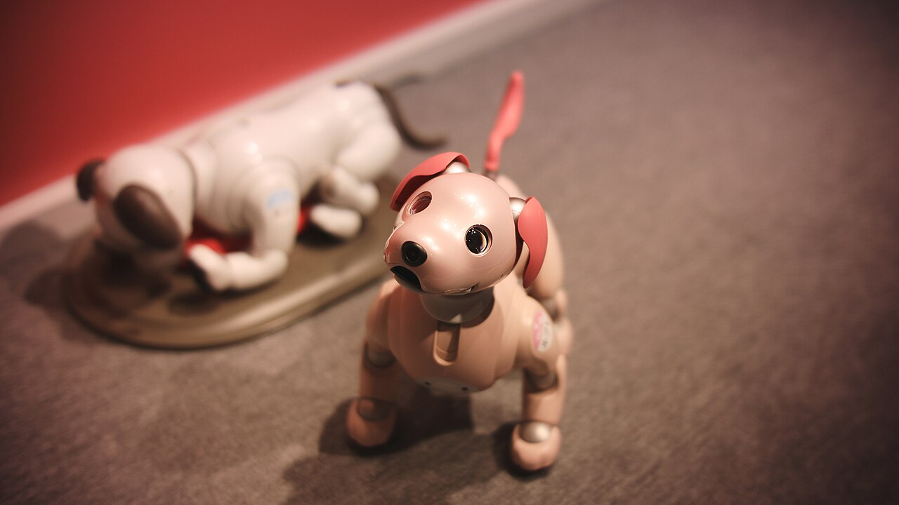
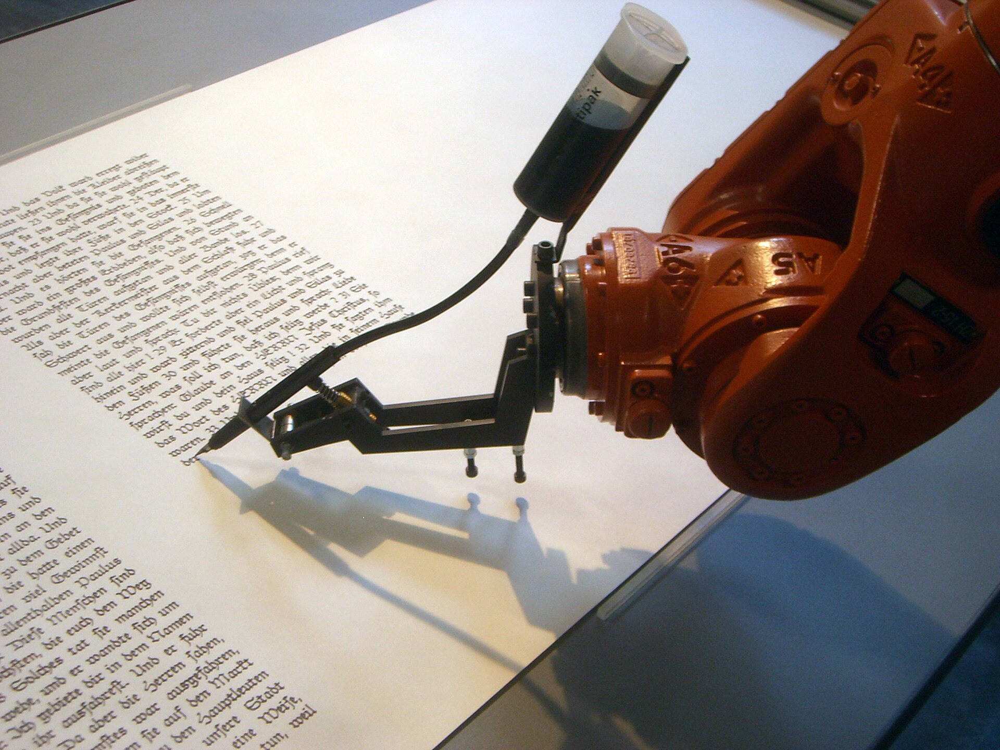
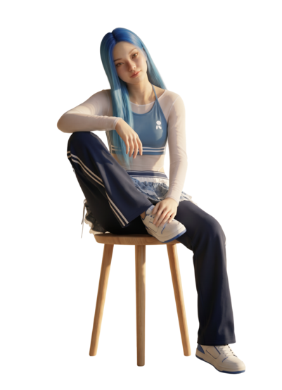

One tap starts continuous 90-second playback from the beginning.
"This would be better with someone."
Not because anyone is missing — a plus one just turns
something you do into something you share.
Where AI Is Today

Social robots
AIBO proved people form real bonds with robots — owners even held funerals for theirs. But the emotion is performed, and it never makes anything with you.
Sony AIBO · MIKI Yoshihito, CC BY 2.0

Robots as creative partners
An industrial arm hand-writes a whole bible; Sougwen Chung paints beside one. Robots can make real work — but it stays a performance, with no next session once it ends.
robotlab, bios [bible] · Mirko Tobias Schaefer, CC BY 2.0

AI companions
Replika proved millions will welcome an AI into daily life — but it stays behind a screen: no hands, no shared table, nothing left behind when the conversation ends.